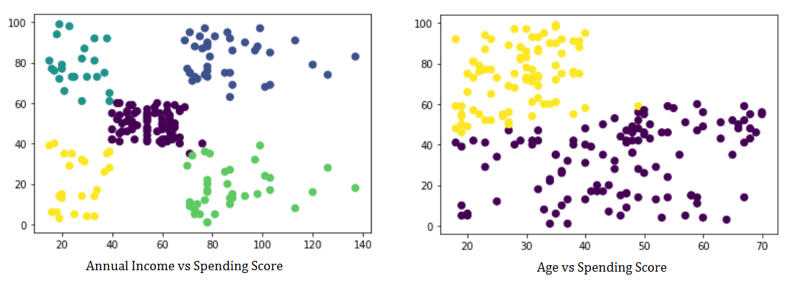
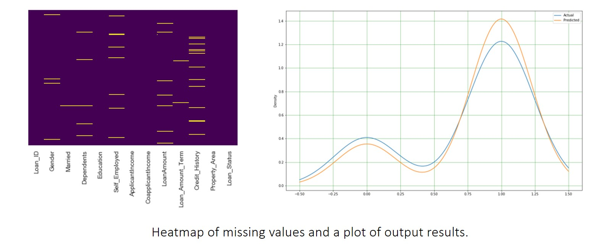
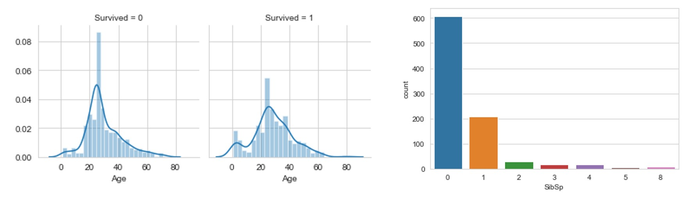

Ndcharles Nweke
Data Scientist | Teacher | Growth Marketing
An engineering graduate who is now in data science/ML. An awesome journey so far🙌. My interests are in real-life applications of data science/ML to business to tackle every day problems.
Let's Connect
LinkedIn | Twitter | Blog |
View my Resume
My Data Science Portfolio
Market Basket Analysis for Retail
Market basket analysis is a process that looks for relationships among entities and objects that frequently appear together, such as the collection of items in a shopping cart. This project is an attempt to analyze an online retail data set and try to find the relationship of objects that go together within the business context. With this information, we can get what products can be placed close to each other, and also what products to recommend to a customer at checkout.
Lagos Rent Prediction Web app (EazyRent)
This is an inter-track project which involves the UI/UX team, Data Science team and Software Engineering team. As part of the data science team, our task is to scrape the necessary data and then develop a machine learning model to help house seekers in Lagos have an idea of how much it would cost them to rent an apartment in locations around Lagos.
Summarising text Using BART and T5
In this project, automatic text summarisation was explored BART and T5 models. Both models perform well on a variety of tasks out-of-the-box such as translation, questions answering and summarisation. The aim here, however, was to test their effectiveness on text summarisation. The models gave very good outputs which can be primed further by changing the pre-train files and hyperparameter tuning.
Customer Segmentation
The purpose of this project is to develop a clustering algorithm to help a supermarket owner create target groups for his customers. This would help him know what age to target which product. As well as what kind of offers to use on which customers during his marketing runs. This is an unsupervised learning problem hence we used Kmeans clustering to segment the customers and provide Mr Ken with the Target Customers.
Loan Prediction
A classification project to reduce the tedious process of ascertaining if a person will be offered loan or not. Models used are, LogisticRegression, DecisionTreeClassifier, RandomForestClassifier and AdaBoostClassifier. While AdaBoostClassifier outshined the others further efforts were made to improve on the accuracy of the models.
Linear Regression on Lagos Rent
Rent data was scraped from nigeriapropertycentre using Python and BeautifulSoup and were preprocessed in Excel to inspect the data for irregularities. EDA was then carried out on the data using python in jupyter-lab environment. A LinearRegression mdoel was then built to predict the rental price of houses within Lagos.
Exploratory Data Analysis on Titanic Dataset
Exploratory Data Analysis is an important step required to complete every project regardless of type of data one is working with. It gives us a sense of what additional work should be performed to quantify and extract insights from our data. In this analysis, I will be looking at the different factors that could have affected the survival rate of the passengers of the Titanic.
Some Tools I Use
- MS Excel
- Python
- Scikit-Learn
- SQL
- Power BI
- Other data science & ML frameworks
[View my GitHub profile] | [Read the Blog]